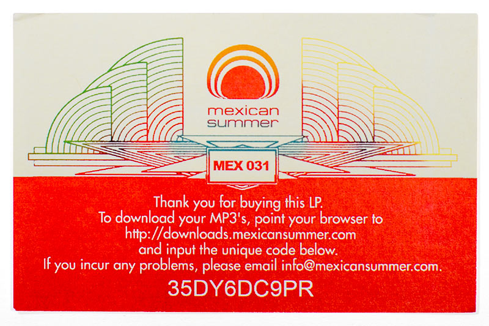
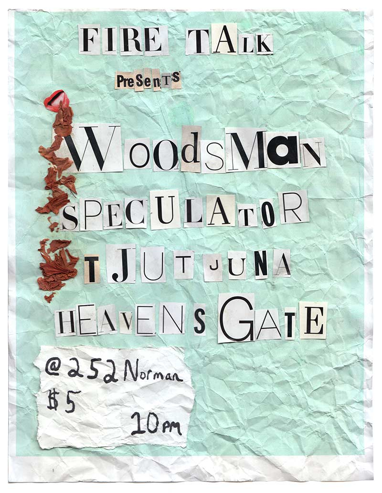
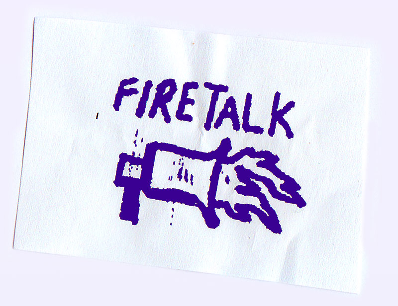

Gone without a trace, the Monster Island Basement was once half a square-block on River Street by the Williamsburg waterfront that held an art gallery, a hall of practice spaces, a single residence, and an intimate venue primarily for emerging local and national artists. Many of the acts that played the basement would “not be playing this kind of venue for much longer,” the media would perpetuate, but these sorts of rooms had long been a staple of the New York City art-party scene. This ethos was at fever pitch in 2010.
The authenticity of a tiny venue with hoards of musicians, artists, and chic photographers had even enticed hip-hop mogul Damon Dash to go DIY, throwing shows in his studio basement in Manhattan with the help of a few young, enterprising New Yorkers. They deemed it Under 100, pairing locals with widely known acts like Erykah Badu and Mos Def. It was the height of blog-rock. Bands like the Vivian Girls and WAVVES went from forming in ash-covered practice spaces to selling out venues seemingly overnight, Athens’ Black Kids were signed to Columbia Records after posting one track to MySpace, and mischievous sites like Pitchfork, Chocolate Bobka, and Get Off The Coast were informing the record industry more than Rolling Stone and SPIN. It was an exciting time to be in a band, it seemed like anyone could make it, and fast with a pinch of luck.
After months of demoing in Denver, Woodsman had seen some of this luck. With several tracks leaked across the blogosphere, Woodsman’s moss covered kraut-rock had garnered the attention of young upstart label Mexican Summer, leading to the release of Collages, one of their earliest full-fledged albums in December of 2009. “Any attention was a shock to us in the first place,” drummer Dylan Shumaker recounts.
Soon enough, people were talking and that summer tour was largely a coming out party for the band. The June 18th bill, put together by infamous Brooklyn promoter Todd P, would see Woodsman playing alongside Wild Nothing, Ducktails, and Velvet Davenport on a small stage, down a flight of stairs in a graffiti-covered basement. It was nothing short of a perfect storm and Woodsman would taste New York City for the first time.
Ambient agency, glowing yet restrained, Woodsman’s art was about long form storytelling, ritualistic and compiled. The band would meditate with their instruments, paying close attention to one another’s subtle changes and vulnerabilities while just as soon blaring white noise in an indifference that was their communion. “The risk taking element of this band is pretty much what it’s all about,” guitarist Trevor Peterson adds. Playing live added extra pressure. In the yellow spotlights of Monster Island, Woodsman were immersed in their craft, improvising over structured jams that were the labor of love they had cultivated in their house back West.
Mark Demolar’s stylized arpeggios interweaved with Peterson’s shamanistic yelping while drummers Eston Lathrop and Dylan Shumaker vamped like machine guns. Walls of cymbals blaring like gongs, drum sticks banging guitar frets, tangled strings riding down the neck, and looped feedback all filled up the room. Just hitting full bloom, Todd P rushed the stage and screamed. “You have to stop playing!” How long had it been? 20 minutes? An hour? Had it been months? Years?
“I had this funny realization when I moved here three years ago. That’s when time stopped for me...when people ask how long Woodsman’s been a band, I still say like three years...for some reason when I moved here, everything started over for me,” Mark recalls. Mark and Trevor met studying film in Denver and both had two-man bands. Eston and Dylan were their drummers. One thing led to another and they all began playing together. “In Denver music was always an open thing, the door was unlocked,” Dylan remembers. Trevor and Eston were called Woodsman and the name soon enveloped all four.
They would jam for hours in a house on Stout Street, dubbed the Pink Castle and set up shows in the area at Imperial Shit Hole, a big room that functioned as a gallery and venue started by friend Greg Tait. Everything was DIY and everything was slow. Working jobs at hotels or bars, they lived to come home and make art, never rushing to any place too quickly. They had Pink Castle, gear, and time. Songs would start gradually, picking a tempo or key, setting up mics just to see what would happen. Somewhere between endless experimentation, listening to Neu! ‘75 on repeat, and bonding in a house with the rest of their lives at their fingertips, something was born.
After their inception in 2008, Woodsman would perform across the Midwest and West Coast. It provided Woodsman with a new soundboard other than the “ten friends” at Imperial Shit Hole and found them making connections across a varying landscape. They would meet contemporaries that would give and take from them alike, bands like Kansas-bred Baby Birds Don’t Drink Milk would look into the mirror just as the mirror would become them.
Before transplanting to NYC, the group culled together Rare Forms. An inspired album made over the summer of 2010 and their last at Pink Castle. Scraping their buoyancy for a more produced, song-oriented style, they set out to record a “record record,” with well formed gems blending their signature skronk with an arena-rocking bravado reminiscent of Crazy Horse or Marc Bolan. After the recording, they would have to relearn the majority of what they had just done. “Marc wrote out the tabs,” Dylan jokes. Suddenly they weren’t exploring their own psychedelic plain, rather attempting to recapture what a summer spent recording produced. Mark was already in New York by then, Trevor and Dylan soon to follow.
Sleeping on roofs and couches, Trevor and Dylan would frequent Brooklyn before settling down. Trevor slyly jests 'I grew up in Iowa, I can’t just go somewhere, I got to test it out first.” Raising enough money to jump across the country, he left the house, the trees and silent nights. Coming to New York meant recording in a studio, not a house. New York meant constantly thinking about money, not just music. It meant living the hustle because the hustle was the only way to survive. New York also meant losing Eston behind the skins. “He flew back after four days,” Dylan recounts, his partner drummer’s heart rooted thickly in his home. The band would continue as three.
Their latest, self-titled album was recorded with Daniel Schlett at Strange Weather Studios in Brooklyn upon Woodsman's arrival in NYC. Strange Weather is an apartment building renovated into a lush recording studio. A ten-foot mixing board peaks into a sound treated studio, where sounds bounce of hardwood floors and drift into the backyard over a faded doormat bearing the studio’s name. With an arsenal of high-end machinery and the band’s high fidelity stems, it was completed last July. They would crown it Woodsman; a stylized shaky vision of rock, a return and congealing of years past.
Walking down Havemeyer Street in Brooklyn, I see Trevor standing outside a retail shop. Trevor is a tall glass of water. Skinny and strong, with long hair that hangs just below his shoulders, thick stubble below his nose and chin with deep brown eyes. He leads me downstairs into a practice space the band shared with psych no-wavers Psychic Ills. The basement looks like it could have been CBGB’s; green paint, punk stickers, the smell of stale cigarettes wafting heavily out onto the street. We sat in the limited free space and discussed our fellowship of Black Dice. Essentially a religion amongst musicians of a certain mindset, the Dice remain an elusive white whale.
I had long associated Woodsman’s output with kraut-rock, psychedelia, and the Madchester drug haze, but over tall boys with Trevor that night, it became apparent that these tendencies were all reaching towards that Black Dice oeuvre. That indescribable mood between chaotic rhythm, beautiful mistakes, and pounding visceral cacophony. Trevor had an affinity for bone-rattling non-melody, which became even more apparent as we spoke of Katrina Stonehart. Stonehart, the solo moniker of Drew Gibson of Baby Birds Don’t Drink Milk, was a different beast; a black hole and sweet saccharine dream. I was a fan as well, albeit later to the party than Trevor, and we swooned over Drew’s harsh low frequencies that he pummeled forth between sugary delayed 7th chords and phantom Beach Boys coos.
“I still don’t know how he does that,” Trevor said with a grin, romanticizing his peer in the endlessly curious and supportive way Trevor treats musicians he admires. We jammed for an hour, but mainly talked about music, our lives and success. Trevor never fears falling short, perhaps a lesson learned from Mexican Summer, the blogosphere and the popularity of Rare Forms. “It sucks when other things start to filter in...we’re not careerists, we just want to make what feels right,” he confided in me. For Woodsman, it’s all about living the music they create, the glow centered inwards.
Every few months, Trevor sets up shows at friend Steve Corcoran’s apartment in Greenpoint by McGolrick Park. A fairly quiet industrial neighborhood, Corcoran’s apartment has a large living room that's been converted into a practice space and recording studio with windows facing the East River. In October of 2011, Trevor held a Fire Talk showcase at Norman.
With the promise of free tequila and a roof that displayed the southern tip of Manhattan in sparkling orbs, the showcase wasn’t of the nervous energy that encompassed Monster Island, but of familial warmth. With Woodsman and Fire Talk, Trevor was no longer grasping at limelight but was cultivating a stable ground.
From bare solo acts like Speculator and Eola, to the desert psychedelia of Tjutjuna, the night resembled in many ways the spirit that Woodsman brought to New York City, as if a tequila-coated brain could come on stage at any point, pick up a hot patch cable, and join the drone communion.
Playing in front of the window, their long hair blurred in clamp lights reflected on the glass, Woodsman melting even further into the city lights. The clock ached, the night grew long, and everyone kept asking for more.

Starting a record label is easy. Running and maintaining one however, whilst navigating the ripe and often overcrowded beast that is our current music industry is an entirely different story. Within the deep web of underground and DIY communities, label longevity stems not only from those who possess a deep love of music, but those who are able to harmonize with a business that is oftentimes frugal.
Fire Talk records, started as a means to give clout to a Woodsman CDR released prior to an early tour, is now a mainstay in the psych/drone/ambient bevy. While speaking with Trevor in his Greenpoint apartment which doubles as Fire Talk HQ, it becomes evident why the label was able to recently celebrate it's fifth year of existence.
Despite an obvious overlap between Woodsman and Fire Talk, Trevor described his relationship with the two. "The band is an art project. It doesn't have anything to do with commerce. They're completely separate entities in my mind." It is exactly this distinction however that has allowed both to grow into fully realized projects,Trevor bringing a healthy life force into each. For being the most mellow dude I've ever met, he's also deeply focused and driven, recognizing the challenges of running a business so often discounted by smaller labels.
"There's no reason why a label can't function like a Dead Oceans or a big label, but also be run by one-dude in apartment," he adds when describing his mystic view of running a label. Surrounded every day by the machine of the music industry and having spent time working with those types of labels, he's 'not that far removed to see it.'
This perspective and experience is what makes him such an alluring label-head. Regardless of working with 'deep homies' or helping a Japanese ambient folk-artist assemble her first release, there is an unbridled openness to everything he touches. 'Me having that stance, I can sense when someone needs a little help, when they're so green, so talented, but just can't put it together.' He's also cognisant of when to take a step back if 'a band as a really clear idea of every aspect of their artistic identity.'
Speaking on the influence of technology, Trevor raises some critical points. 'The art side of things is now completely intertwined with the music side...back in the day when you bought a walkman, it was just a walkman, didn't matter the brand...you still had to buy the tape that went in the walkman.' With the advent of apps from Spotify, Rdio, etc., we often forget that now 'there's nothing else you have to do but search.'
"The music industry has niched itself off," he hypothesizes. Rather than become discouraged by disheartening statistics about streaming royalties and the like, Trevor manages to stay hopeful. 'All I know is that at the end of the day, digital revenue is revenue that you would be foolish to not try and capitalize on. It's people, it's ears, and a lot of people are consuming music that way.'
'Running a label is hard,' he laughs. Here's to another five years of Fire Talk.